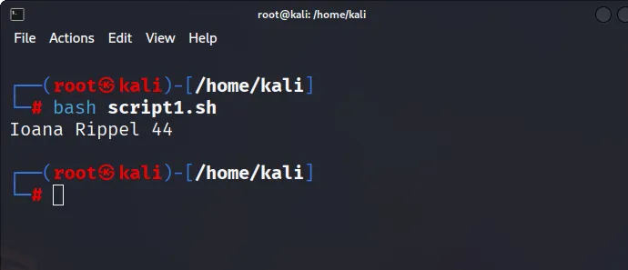
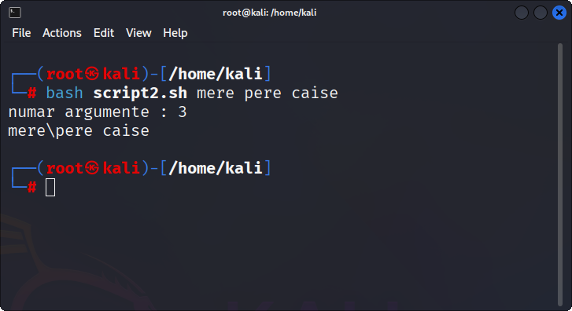
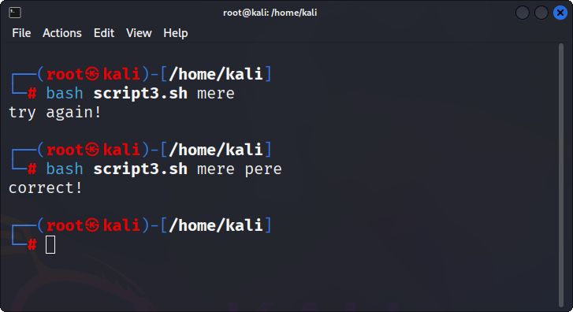
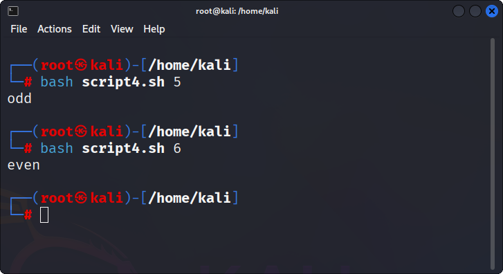
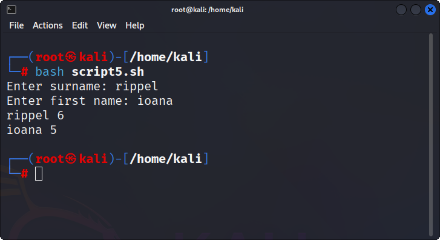
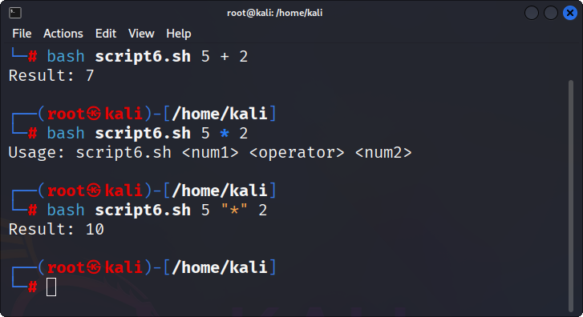
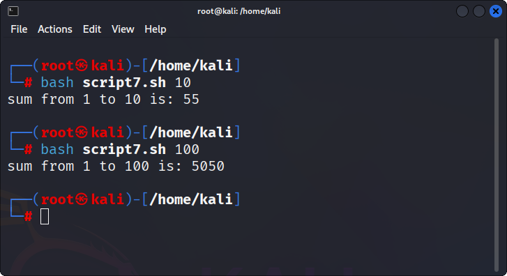
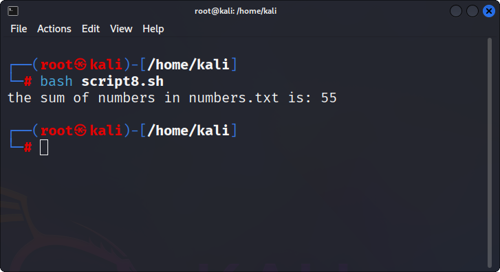
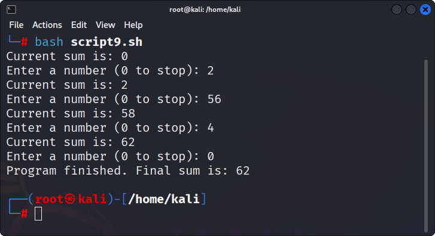

Scripting exercises
| Scripting |
Intro:
This project contains simple Bash scripting exercises to practice working with variables, arguments, input, and loops.
Exercises:
- Write and run a script called
my_data.shwhere: define 3 variables (name, surname, age), assign values to them, and display the variables separated by the character$.
#! /bin/bash
nume="Ioana"
prenume="Rippel"
varsta=44
echo "$nume $prenume $varsta"


- Write a script that displays the number of arguments received and, on the same line, the first 2 arguments separated by a backslash (
\).
#!/bin/bash
if [ $# -ge 2 ]; then
echo "$1\\$2 ${@:3}"
else
echo "$@"
fi


- Write a script that, if it receives 2 arguments, displays the message
Correct!, otherwise displays the messageTry again!.
#!/bin/bash
if [ $# -eq 2 ]
then
echo "correct!"
else
echo "try again!"
fi


- Write a script that receives a number as an argument and displays
evenorodd, depending on the number’s parity.
#!/bin/bash
# check if we have exactly 1 argument
if [ $# -ne 1 ]; then
echo "Usage: $0 <number>"
exit 1
fi
# check if the argument is a number (only digits)
if [[ "$1" =~ ^[0-9]+$ ]]; then
# check if number is even or odd
if (( $1 % 2 == 0 )); then
echo "even" # par
else
echo "odd" # impar
fi
else
# not a number
echo "not a number"
fi


- Write a script that shows the user prompts in turn:
Enter name:,Enter surname:. Read the input values and display on 2 lines: the name followed by its length, and the surname followed by its length.
#!/bin/bash
read -p "Enter surname: " name
read -p "Enter first name: " firstname
echo "$name ${#name}"
echo "$firstname ${#firstname}"

6. Write a script that receives as arguments an operation (+, , ) and two numbers, and displays the result of the operation between the two numbers.
set -f
if [ $# -ne 3 ]; then
echo "Usage: $0 <num1> <operator> <num2>"
exit 1
fi
num1=$1
op=$2
num2=$3
result=$((num1 $op num2))
echo "Result: $result"


- Write a script that calculates the sum of the numbers from 1 to N, where N is received as an argument.
N=$1
if [ -z "$N" ]; then
echo "Usage: $0 <N> "
exit 1
fi
sum=0
i=1
while [ $i -le $N ]; do
sum=$(( sum + i ))
i=$(( i + 1 ))
done
echo "sum from 1 to $N is: $sum "


- Write a script that calculates the sum of the numbers from the file
numbers.txt. The numbers are given one per line.
sum=0
while read num; do
sum=$(( sum + num ))
done < numbers.txt
echo "the sum of numbers in numbers.txt is: $sum"


- Build a script that receives numbers from the user one by one and sums them until the value zero is entered. The script must display the partial sum before each entered number.
sum=0
while true; do
echo "Current sum is: $sum"
read -p "Enter a number (0 to stop): " number
if [ "$number" -eq 0 ]; then
break
fi
sum=$((sum + number))
done
echo "Program finished. Final sum is: $sum"

Through these exercises I practiced the basics of Bash scripting — working with variables, arguments, user input, conditions, loops, and simple arithmetic operations.